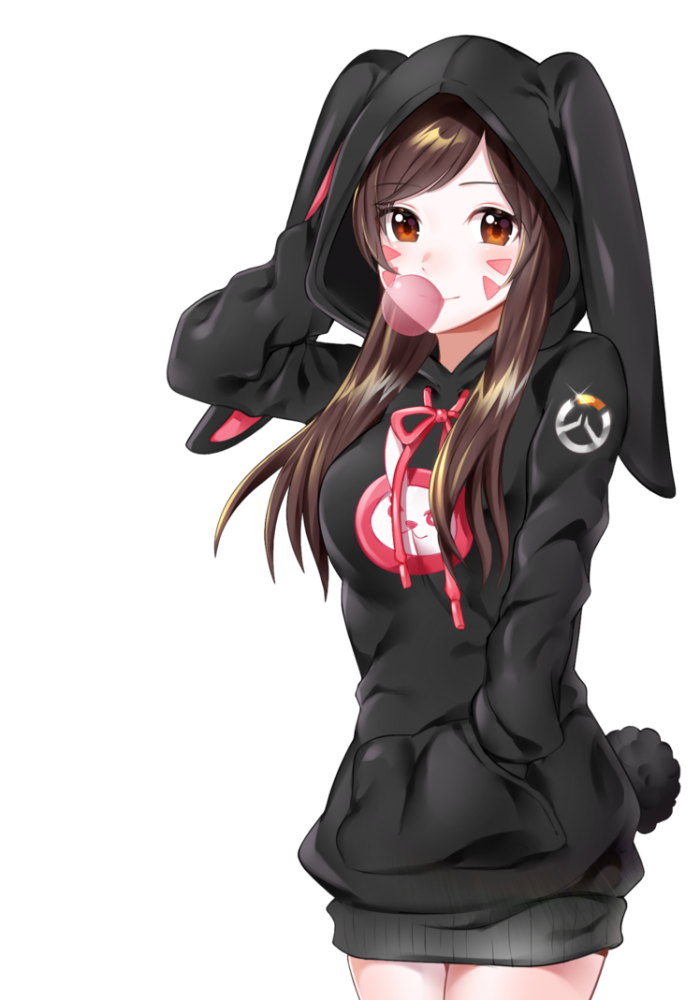

Привіт! Це моя сторінка. Тут я розкажу про себе :)
Я Пітух Демян Володимирович народився 23 грудня 2004 року
Я народився в селі Озерна Тернопільскої області. Навчався 9 років в Озернянській школі після чого поступив на навчання в Зборівський коледж на Програмну Інженерію.
На даний момент я навчаюся в Університеті ім.І Пулюя на спеціальності комп'ютерна інженерія.
Хоббі: Ігри, аніме, комп'ютерна техніка, колекціонування всякої фігні
